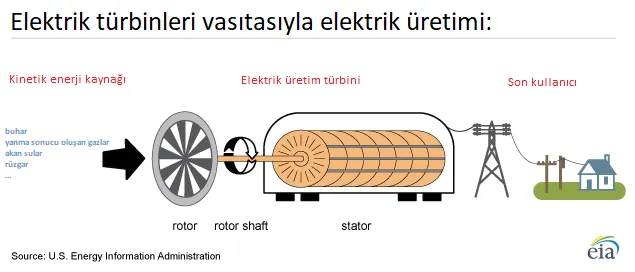

Bugünün modern dünyasında elektrik, artık birçok insan için su, hava gibi temel bir ihtiyaç haline gelmiş durumda. Buna rağmen, dünyada 1 milyardan fazla insanın hala düzenli olarak elektriğe erişimi yok. Biz akıllı telefonlarımızı şarj etmek için etrafta priz ararken, bu durumun bir başkası için lüks olabilmesi elektriğin kıymetini anlamamız açısından önemli bir hatırlatıcıdır.
Nitekim 31.03.2015 tarihinde Türkiye genelinde yaklaşık 5 saat süren o büyük kapsamlı elektrik kesintisini hepimiz hatırlıyoruz. Bu makalemizde, evlerimize kadar gelen bu enerjinin üretim aşamalarını ve birincil kaynaklardan nasıl dönüştürüldüğünü inceleyeceğiz.
Elektrik Üretiminin Temel Prensibi
Birincil enerji kaynaklarının (kimyasal, radyoaktif veya kinetik) kullanılmasıyla elektrik türbinlerinin dönmesi sağlanır. Türbinlerin dönmesiyle alternatör içerisindeki mıknatıslar bir manyetik alan değişimi meydana getirir. Bu manyetik enerji de iletkenlerdeki elektronları harekete geçirerek elektrik enerjisini oluşturur.

Hidroelektrik ve Rüzgar Enerjisi

Manavgat Şelalesi, Antalya
Doğada kinetik enerjiyi her zaman hazır bulamayabiliriz. Örneğin Manavgat şelalesindeki suyun potansiyel enerjisi kinetik enerjiye dönüşse de, verimlilik ve ekolojik denge açısından doğrudan üretim için uygun değildir. Bunun yerine büyük nehirlerin önüne kurulan hidroelektrik barajlarda su biriktirilerek kontrollü bir kinetik enerji elde edilir ve türbinler döndürülür.
Rüzgar türbinlerinde de benzer bir mantık işler. Basınç farkıyla hız kazanan hava tanecikleri, türbin pervanelerini döndürerek mekanik enerjiyi statordaki manyetik alan değişimi vasıtasıyla elektriğe dönüştürür.
Termal ve Nükleer Santraller
Bir diğer yöntem ise suyu buharlaştırarak elde edilen kinetik enerjiden faydalanmaktır. Fosil yakıtlı termik santrallerde veya radyoaktif elementlerin kullanıldığı nükleer santrallerde açığa çıkan yüksek ısı ile su buharlaştırılır. Oluşan bu yüksek basınçlı buhar, türbin kanatçıklarına çarparak dönme hareketini başlatır.
Alternatör: Enerjinin Kalbi

Elektrik türbinlerinde enerjinin asıl dönüştürüldüğü yer alternatörlerdir. Alternatör iki ana parçadan oluşur: Rotor ve Stator. Rotor, dönen hareketli parçadır ve üzerinde mıknatıslar bulunur. Stator ise sabit duran ve üzerinde iletken tellerin sarılı olduğu parçadır. Rotor döndükçe manyetik kutupların (S ve N) yeri sürekli değişir ve bu değişim iletken kablolarda elektrik akımını tetikler.
Daha detaylı bir görsel anlatım için bu videoyu inceleyebilirsiniz.
Kaynakça ve İleri Okuma:
Bir sonraki makalemizde üretilen elektriğin son kullanıcıya dağıtımını konuşacağız. Görüşmek üzere.